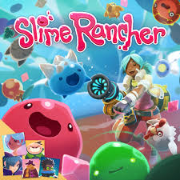
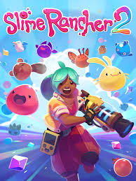

Slime Rancher é um jogo de exploração e simulação onde os jogadores assumem o papel de Beatrix LeBeau, uma jovem rancher (fazendeira) que viaja para um planeta distante chamado "Far, Far Range" para viver sua vida cuidando de slimes — criaturas fofas e gelatinosa com diversos poderes e características.
O jogo se passa no futuro, em um universo onde a tecnologia permitiu a colonização de novos planetas, e a agricultura de slimes se tornou uma grande indústria. Beatrix chega a um planeta vasto e selvagem, onde encontra uma variedade de slimes, desde os comuns até espécies raras e misteriosas. Ela se dedica a construir sua própria fazenda de slimes, capturando, alimentando e criando essas criaturas para coletar "plorts", que são substâncias que os slimes excretam. Esses plorts podem ser vendidos no mercado intergaláctico para gerar lucros, e com o tempo, Beatrix constrói sua própria operação de rancho no Far, Far Range.